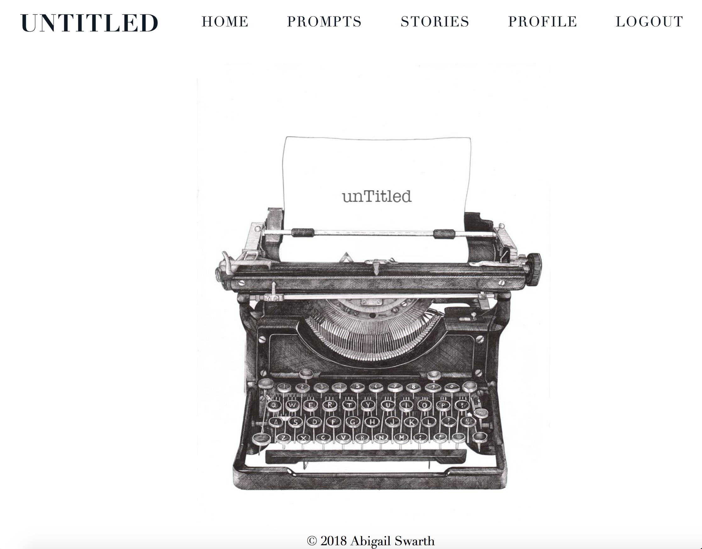

MY WORK
Here is my web development work. For my photography, please visit my Instagram @abbywan.kenobi

UnTitled
UnTitled is an app to assist writers with writer's block by providing writing prompts, searchable by popularity or genre. Users can submit their own prompts, or write stories from other user's prompts, as well as like and comment stories and prompts. Demo | GitHub
UnTitled is an app to assist writers with writer's block by providing writing prompts, searchable by popularity or genre. Users can submit their own prompts, or write stories from other user's prompts, as well as like and comment stories and prompts. Demo | GitHub

Algorhythm
This app creates tailor made playlists using the Spotify API. Users can input song titles, artist names, or genres, which will then generate a random playlist based off of those selections, which can then be uploaded and saved to a Spotify account. Users can then view other user's playlists and comment on them.
Demo | GitHub